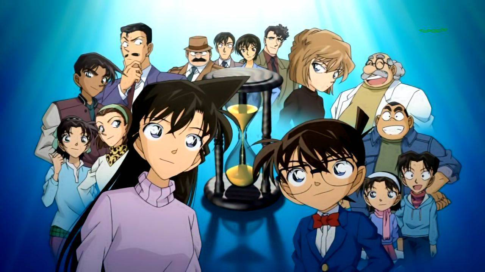
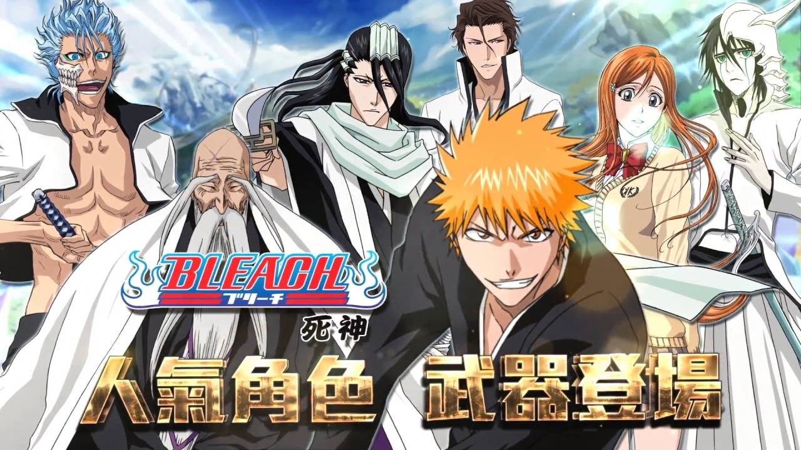
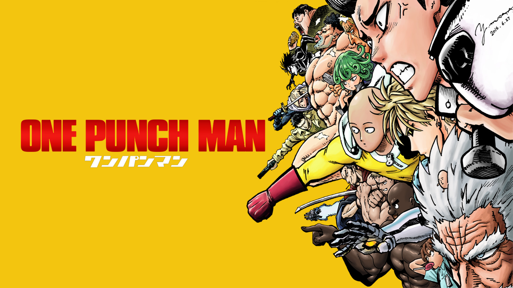

Naruto Shippuden: second season of Naruto; More than two years have passed since the most recent adventures in the Hidden Leaf Village, ample time for ninja wannabe Naruto Uzumaki to have developed skills worthy of recognition and respect. The hyperactive youngster has trained extensively with Jiraiya-sama and returned to Konoha to reunite with friends and, perhaps, partake in more pranks than schoolwork. But Naruto is more determined than ever to become the greatest ninja, and his hard-earned improvements are put to the ultimate test against newer, stronger enemies. "Naruto: Shippuden" is adapted from Part II of the "Naruto" comic book series by Masashi Kishimoto.
2. One Piece
Follows the adventures of Monkey D. Luffy and his friends in order to find the greatest treasure ever left by the legendary Pirate, Gol D Roger. The famous mystery treasure named "One Piece". ... He obtained wealth, fame, and power to earn the title of Pirate King.
3. Detective Conan

Shinichi Kudou, a great mystery expert at only seventeen, is already well known for having solved several challenging cases. One day, when Shinichi sees two suspicious men and decides to follow them, he inadvertently becomes witness to a disturbing illegal activity. When the men catch Shinichi, they dose him with an experimental drug formulated by their criminal organization and abandon him to die. However, to his own astonishment, Shinichi is still alive and soon wakes up, but now, he has the body of a seven-year-old, perfectly preserving his original intelligence. He hides his real identity from everyone, including his childhood friend Ran Mouri and her father, private detective Kogorou Mouri, and takes on the alias of Conan Edogawa (inspired by the mystery writers Arthur Conan Doyle and Ranpo Edogawa).
4. Bleach

Ichigo Kurosaki is an ordinary high schooler—until his family is attacked by a Hollow, a corrupt spirit that seeks to devour human souls. It is then that he meets a Soul Reaper named Rukia Kuchiki, who gets injured while protecting Ichigo’s family from the assailant. To save his family, Ichigo accepts Rukia’s offer of taking her powers and becomes a Soul Reaper as a result.
5. One Punch Man

The seemingly ordinary and unimpressive Saitama has a rather unique hobby: being a hero. In order to pursue his childhood dream, he trained relentlessly for three years—and lost all of his hair in the process. Now, Saitama is incredibly powerful, so much so that no enemy is able to defeat him in battle. In fact, all it takes to defeat evildoers with just one punch has led to an unexpected problem—he is no longer able to enjoy the thrill of battling and has become quite bored..
6. Dragon Ball Z
Five years after winning the World Martial Arts tournament, Gokuu is now living a peaceful life with his wife and son. This changes, however, with the arrival of a mysterious enemy named Raditz who presents himself as Gokuu’s long-lost brother. He reveals that Gokuu is a warrior from the once powerful but now virtually extinct Saiyan race, whose homeworld was completely annihilated. When he was sent to Earth as a baby, Gokuu’s sole purpose was to conquer and destroy the planet; but after suffering amnesia from a head injury, his violent and savage nature changed, and instead was raised as a kind and well-mannered boy, now fighting to protect others.
 ANIME CATALOGUE
ANIME CATALOGUE